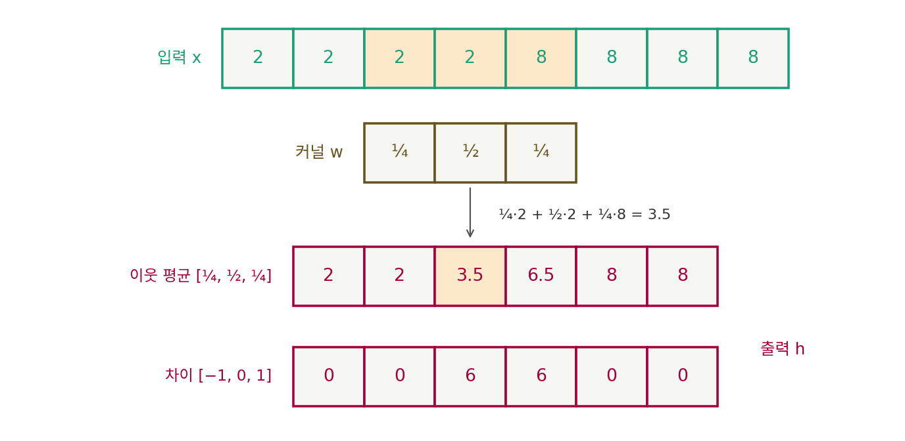
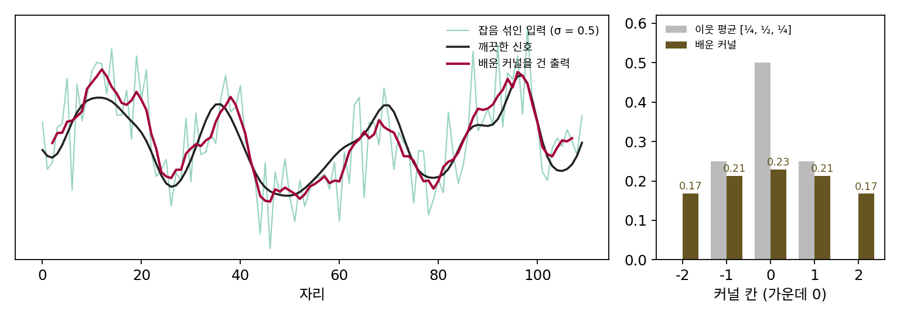

3장 — 합성곱: 이웃만 보는 MLP
이 장의 물음
잡음 섞인 그림을 받아 잡음을 걷어 낸 그림을 내놓는 신경망을 만든다고 하자. 지금 손에 있는 신경망은 MLP 하나다. 가로세로 64칸 흑백 그림은 숫자 4,096개이니, 같은 크기의 그림을 내놓는 MLP 층 하나는 입력 4,096개와 출력 4,096개를 모두 잇는 가중치 16,777,216개가 필요하다. 512 × 512 컬러 그림이라면 칸마다 빨강·초록·파랑 세 수가 있어 786,432개의 수이고, 층 하나의 가중치는 6,184억 개를 넘는다. 그런데 그림에 잡음이 섞이며 퍼지는 모습을 설명한 이웃 평균은, 칸마다 이웃 몇 칸에 정해진 비율을 곱해 더할 뿐이었다. 그림이 얼마나 크든 비율 몇 개로 끝났다. VAE 의 흐림을 따지면서 손글씨의 둥근 정도를 재려고 손으로 고른 곧은 획 필터 네 개도 같은 계산이었다. 이웃 평균은 물리가, 곧은 획 필터는 우리가 비율을 정했다. 어떤 비율이 쓸모 있는지를 사람이 정하지 않고 데이터가 고르게 할 수는 없을까?
수가 많은 것만 문제가 아니다. 가로세로 16칸 그림에 세로 막대가 있는지 맞히는 MLP를, 막대가 왼쪽 절반에만 있는 그림 2만 장으로 학습시켰다. 왼쪽에 막대가 있는 새 그림은 84.8%를 맞히는데, 같은 막대가 오른쪽 절반에 있으면 50.8%를 맞힌다. 동전을 던져 고르는 것과 같다. 사람 눈에는 막대가 몇 칸 옮겨 갔을 뿐인데, MLP에게는 처음 보는 그림이다. 이 장은 다음 물음에 차례로 답한다.
- 이웃 평균처럼 이웃에 비율을 곱해 더하는 계산에서, 비율을 바꾸면 무엇을 할 수 있을까? 그 비율을 배우게 할 수도 있을까?
- 그림의 모든 자리에서 같은 비율을 쓰면 가중치는 얼마나 줄고, 옮겨 간 막대도 알아볼까?
- 이웃만 보는 계산을 여러 번 쌓으면 그림의 얼마나 먼 곳까지 볼 수 있을까?
- 칸마다 수가 여러 개인 컬러 그림이나, 칸마다 여러 특징을 담은 중간 결과는 어떻게 다룰까?
합성곱: 이웃에 같은 비율을 곱해 더하기
그림에 잡음이 섞이며 퍼지는 모습은 이웃 평균 하나로 설명됐다. 가로 한 줄만 보면, 칸마다 자기 값의 ½과 왼쪽·오른쪽 이웃 값의 ¼씩을 더해 새 값을 만든다. 그림 편집 앱의 「흐리게」도 같은 일을 한다. 그런데 같은 앱의 필터 메뉴에는 「선명하게」와 「윤곽 찾기」도 있다. 이것들도 이웃 몇 칸에 비율을 곱해 더하는 같은 틀일까? 그렇다면 비율 몇 개만 바꿔 끼우면 전혀 다른 일을 하는 셈이고, 그 비율을 사람이 고르지 않고 신경망이 배우게 할 수도 있다.
비율 셋으로 흐리게, 비율 셋으로 윤곽을
어두운 벽에서 밝은 창으로 넘어가는 사진의 가로 한 줄을 떠올리자. 밝기가 2, 2, 2, 2, 8, 8, 8, 8이다. 이 줄에 이웃 평균 [¼, ½, ¼]을 걸면, 셋째 칸부터 여섯째 칸까지를 가운데로 한 값은 차례로 2, 3.5, 6.5, 8이 되고 양 끝 두 칸까지 넣어 2, 2, 3.5, 6.5, 8, 8이다. 2에서 8로 한 번에 뛰던 경계가 3.5, 6.5를 거치는 비탈이 됐다. 흐려진 것이다.
비율만 [−1, 0, 1]로 바꿔 보자. 오른쪽 이웃에서 왼쪽 이웃을 빼는 셈이다. 결과는 0, 0, 6, 6, 0, 0이다. 밝기가 고른 곳은 0이고, 경계를 끼고 있는 두 칸만 6이 된다. 같은 틀에서 비율 셋만 바꿨는데 이번에는 윤곽만 남았다.

입력의 칸마다 그 칸을 가운데로 한 이웃 몇 칸에 정해진 비율을 곱해 더해 출력 한 칸을 만드는 계산을 합성곱 (이웃에 같은 비율을 곱해 더하기 / convolution)이라 하고, 곱하는 비율의 묶음을 커널(kernel)이라 한다. 이웃 평균도 커널 [¼, ½, ¼]의 합성곱이었다. 그림처럼 가로세로가 있으면 커널도 가로세로 3칸, 곧 3 × 3 = 9개의 수가 된다.
커널이 어떤 모양인지는 점 하나에 걸어 보면 바로 보인다. 가운데 칸에만 1이 있는 줄 0, 0, 0, 1, 0, 0, 0에 이웃 평균을 걸면 0, 0, ¼, ½, ¼, 0, 0이 나온다. 점 하나가 커널 모양으로 번진 것이다. 처음 줄이 여러 점의 합이라면 출력은 점마다 번진 커널을 그 점의 값만큼 키워 더한 것이 된다. 잡음 섞인 분포가 데이터의 점마다 종 모양을 씌워 더한 것이라고 했던 그 계산이 바로 합성곱이다.
출력이 두 칸 짧아지는 것도 눈여겨보자. 양 끝 칸에는 이웃이 한쪽뿐이라 계산을 빼면 길이가 8에서 6이 된다. 그림 크기를 그대로 지키려면 바깥에 0을 채우거나 가장자리 값을 늘여 채운 뒤 계산한다. 이렇게 바깥을 채우는 것을 패딩(padding)이라 부른다.
아래 위젯에서 3 × 3 커널의 아홉 수를 바꿔 같은 그림에 걸어 보자. 이웃 평균, 윤곽, 선명하게가 모두 아홉 수의 차이일 뿐이다. 잡음을 섞은 뒤 이웃 평균을 걸면 잡음은 줄지만 가는 선도 함께 뭉개지는 것도 보인다.
ML에서: 커널을 사람이 고르지 않고 배우게 하면
커널의 아홉 수를 신경망의 가중치로 두고 학습으로 정하게 할 수 있다. 2012년 크리젭스키(Alex Krizhevsky), 수츠케버(Ilya Sutskever), 힌턴(Geoffrey Hinton)이 학습 사진 약 120만 장, 1,000가지 범주를 가르는 ImageNet 대회(ILSVRC-2012)에서 상위 5개 답 오류율 15.3%로 2위(26.2%)를 크게 앞서 우승한 신경망은 첫 층에서 11 × 11칸(칸마다 빨강·초록·파랑 3개의 수) 커널 96개를 배웠다. 논문은 배운 커널들이 「여러 촘촘함과 방향을 고르는 커널과 여러 색 얼룩」이 되었다고 적었다. 사람이 손으로 만들던 윤곽 커널과 닮은 것들이 학습만으로 나왔다.
잡음 걷기에서도 해 보자. 깨끗한 신호(무작위 수열을 폭 3칸 종 모양으로 흐려 표준편차 1로 맞춘 줄) 2,000개에 크기 σ(시그마) = 0.5인 잡음을 섞고, 잡음 섞인 줄에 걸었을 때 깨끗한 줄과의 평균 제곱 차이가 가장 작아지는 5칸 커널을 구했다. 커널에서 출력까지가 곱하고 더하기뿐이라 최소 제곱으로 한 번에 풀린다(경사 하강으로 배워도 같은 답에 간다). 배운 커널은 [0.168, 0.213, 0.229, 0.213, 0.168]로, 이웃 평균 [¼, ½, ¼]보다 넓고 납작하다. 새로 뽑은 신호로 재면 평균 제곱 차이가 아무것도 하지 않을 때 0.252, 이웃 평균 0.094, 배운 커널 0.057이다. 합성곱 한 층짜리 「잡음을 걷는 신경망」이다.

문제 1. 한파가 지나간 일주일
어느 도시의 아흐레 낮 기온이 21, 22, 21, 23, 22, 14, 13, 14, 13°C였다. (가) 사흘 평균(커널 [⅓, ⅓, ⅓])을 구하라. 기온이 22에서 14로 떨어진 하루는 평균에서 어떻게 보이는가? (나) 커널 [−1, 1](다음 날에서 오늘을 뺀 값)을 걸면 한파가 온 날을 어떻게 찾을 수 있는가?

(가)는 쉬워요. 21.33, 22, 22, 19.67, 16.33, 13.67, 13.33이에요. 일곱 개요.

기온이 8도 떨어진 건 하루 사이였죠. 평균에서는요?

22에서 19.67, 16.33, 13.67로 사흘에 걸쳐 내려가요. 하루에 떨어진 게 사흘에 나눠 떨어진 것처럼 보이네요. 평균을 내면 갑자기 바뀐 날이 흐려지는구나.

(나)는 1, −1, 2, −1, −8, −1, 1, −1이야. 다른 날은 ±2 안쪽인데 하나만 −8이니까 그날이 한파 온 날이고.

두 커널의 수를 더하면 각각 얼마예요?

평균은 1, 차이는 0이에요. 합이 1이면 고른 기온은 그대로 두고, 합이 0이면 고른 기온은 0으로 지우고 바뀐 곳만 남기네요. 아까 밝기 줄에서 이웃 평균과 [−1, 0, 1]이 한 일이랑 똑같아요.
일기 예보에서 「주간 평균 기온」만 보면 한파가 언제 왔는지 모르는 거랑 같네요. 과제 점수도 평균만 보면 언제 망쳤는지 안 보이고요.
문제 2. 커널을 뒤집어 거는 수학의 합성곱
수학 교과서는 합성곱을 h[i] = Σj w[j] x[i − j]로 적는다. 위 식의 x[i + j]와 부호가 다르다. 줄 5, 5, 5, 1, 1, 1에 대해 (가) 커널 [−1, 0, 1]을 두 정의로 각각 걸어라. (나) 커널 [1, 2, 3]이면? (다) 신경망이 커널을 배울 때 두 정의 가운데 무엇을 쓰는지가 중요한가?
신경망 식으로는 0, −4, −4, 0이에요. 수학 식은 j 앞에 마이너스가 붙었을 뿐이니 같은 거 아니에요?
수학 식으로 직접 계산해 봐요. 출력 둘째 칸에서 w[1]은 어느 입력 칸에 곱해지죠?

i − j니까… 왼쪽 이웃이에요. 신경망 식에서는 오른쪽 이웃이었는데요. 그럼 커널을 좌우로 뒤집어 건 거네요. 결과가 0, 4, 4, 0으로 부호가 바뀌었어요.

[1, 2, 3]은 뒤집으면 [3, 2, 1]이라 30, 18, 10, 6과 30, 26, 18, 6으로 갈려. 그런데 [¼, ½, ¼]처럼 좌우가 같은 커널은 뒤집어도 같으니까 차이가 안 나겠다.
(다)는요? PyTorch 문서는 자기들의 합성곱 층이 「교차 상관(cross-correlation)」을 계산한다고 적어 두었어요. 뒤집지 않는 쪽이에요.

커널을 배우는 거라면 상관없어요. 뒤집은 커널이 필요하면 학습이 뒤집힌 수를 찾을 테니까요. 손으로 고른 커널을 남의 코드에 옮길 때만 조심하면 돼요.
길이도 봤어요. 6칸 줄에 3칸 커널이면 출력은 4칸이에요. 6 − 3 + 1이요.
해석학 수업에서 f * g를 정의할 때 g(x − y)로 뒤집는 게 이상했는데, 점 하나에 걸었을 때 커널 모양이 그대로 나오게 하려고 그런 거였구나.
문제 3. 잡음 크기마다 다른 커널
위 「ML에서」와 같은 방법으로, 잡음 크기 σ = 0.1과 σ = 1.0에서도 가장 좋은 5칸 커널을 배웠다. (가) 두 커널은 σ = 0.5의 커널과 견주어 어떤 모양일까? (나) 한 잡음 크기에서 배운 커널을 다른 잡음 크기에 걸면 어떻게 되는가? (다) 잡음 섞인 그림을 받는 신경망이 그림 말고도 알아야 하는 것은 무엇인가?
커널은 잡음을 줄이는 거니까 잡음 크기와 상관없이 비슷하지 않을까요? 0.5에서 배운 걸 다 쓰면 될 것 같은데요.
잡음이 거의 없는 그림에 넓게 퍼진 평균을 걸면 무엇을 잃죠?
원래 신호의 굽이요. 잡음이 작으면 이웃을 조금만 섞는 게 낫고, 잡음이 크면 넓게 섞어야 하겠네.
돌려 봤어요. σ = 0.1에서는 [0.009, 0.297, 0.403, 0.297, 0.008]이라 바깥 두 칸이 거의 0이고, σ = 1.0에서는 [0.158, 0.178, 0.185, 0.178, 0.157]로 거의 평평해요. 합도 0.857로 1보다 작고요.

합이 1보다 작으면 신호를 줄인다는 거잖아. 잡음이 너무 크면 들어온 값을 덜 믿고 0 쪽으로 당기는 거네. 한 번 본 시험 점수에 운이 많이 섞였다면, 그 점수를 곧이곧대로 믿지 않고 반 평균 쪽으로 조금 당겨 실력을 짐작하는 것처럼.
(나)를 봐요. σ = 1.0에서 배운 커널을 σ = 0.1에 걸면요?

평균 제곱 차이가 0.0394예요. 아무것도 안 할 때가 0.0100인데요. 잡음을 걷는다고 건 커널이 오히려 네 배 나쁘게 만들었어요. 거꾸로 σ = 0.1의 커널을 σ = 1.0에 걸면 0.340으로, 제 커널의 0.186보다 훨씬 나빠요.
그럼 (다)는 잡음이 얼마나 섞였는지야. 같은 그림이라도 잡음 크기를 모르면 어떤 커널을 걸어야 할지 정할 수가 없어.

맞아요. 잡음을 걷는 신경망은 그림과 함께 잡음 수준을 받아야 해요. 그것을 신경망 안으로 어떻게 넣을지는 아직 열어 둔 물음이에요.

조교님이 보고서를 고칠 때 초안이면 크게 뜯어고치고 최종본이면 맞춤법만 보는 거랑 같네요. 얼마나 엉망인지 알아야 손대는 정도를 정하죠.